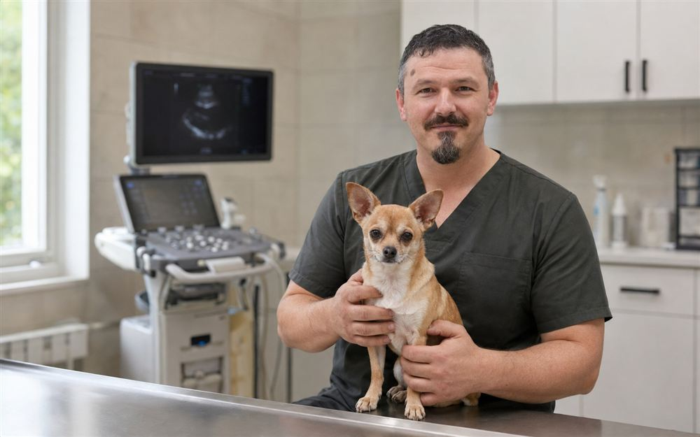
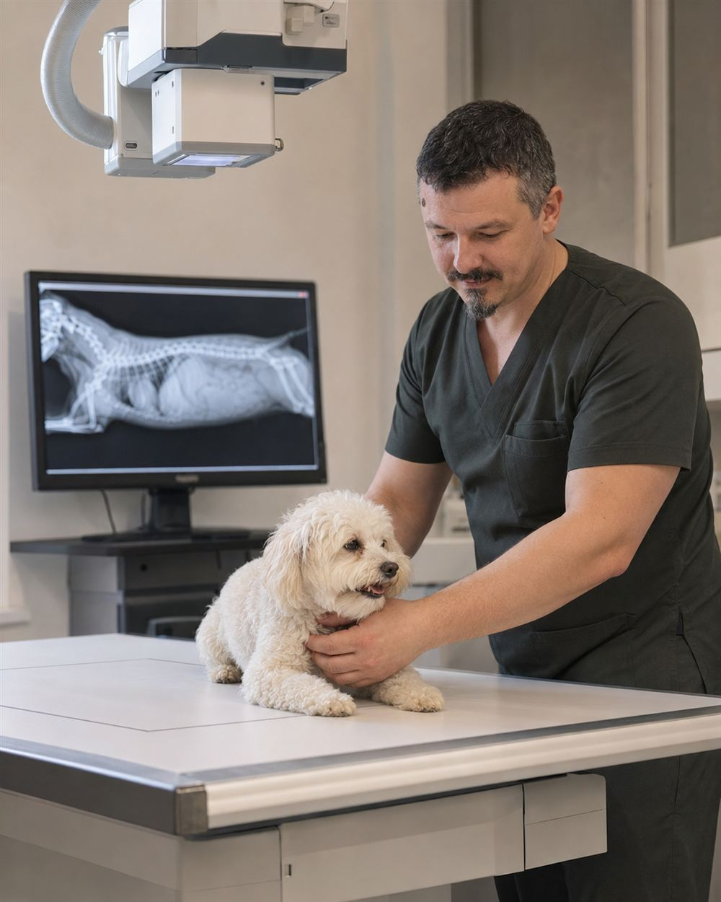

Кардиология
Ведущая специализация. К доктору направляют коллеги из других городов Югры.
- Осмотр и выслушивание сердца
- УЗИ сердца (ЭхоКГ) и ЭКГ
- Оценка рисков перед наркозом
- Наблюдение в динамике
Кардиолог и хирург. Сердце, операции и восстановление — в одних руках. Берётся за сложные случаи, даже когда другие отказали.

Сердце собаки и кошки работает в своём ритме. Выберите, кто живёт у вас, — и сердце на экране забьётся с его скоростью.
Простой домашний тест, которым кардиологи просят пользоваться владельцев. Когда питомец крепко спит, нажимайте кнопку на каждый вдох — бока поднялись. Считаем 30 секунд.
Нормы проверяются врачом

От первого осмотра и ежегодных чекапов до сложного лечения, операций и восстановления. Врач, который знает историю здоровья вашего питомца, видит изменения в динамике и остаётся рядом много лет.
«Когда я на операции, не могу взять трубку. Поэтому собрал на сайте ответы на частые вопросы, а записаться можно онлайн».
Вадим Сергеевич на согласованииДоктор постоянно учится: курсы по кардиологии и хирургии, конференции, выступления для владельцев животных.
«Вся стена увешана сертификатами. Я считаю, это вызывает доверие».
Эльвира Ш. · отзыв в 2ГИС, июль 2026Сканы добавим после получения оригиналов
Тема: «Острое состояние животного: как распознать проблему и чем помочь до визита в клинику» — солнечный удар, заворот, отравление, массаж сердца.
Пост о выступлении во ВКонтакте ↗Здесь будут появляться новые конференции и курсы повышения квалификации.
Три направления, вокруг которых строится работа доктора. Выберите нужное — запись откроется сразу с этой услугой.
Ведущая специализация. К доктору направляют коллеги из других городов Югры.
Подготовка, операция, контроль состояния и памятка для владельца.
Ежегодная программа профилактики с персональным календарём здоровья.
Состав услуг и оборудование уточняются у врача
Точную стоимость лечения врач назовёт после осмотра: она зависит от веса, возраста и состояния питомца.
Цены по данным 2ГИС на 9 августа 2026 года, не являются публичной офертой. Сверить с врачом
Удобно, если вы живёте в другом городе или уже лечитесь у доктора. Консультация по видеосвязи, 30 минут.
Онлайн‑консультация не заменяет очный осмотр при экстренном состоянии.
Памятки по вопросам, которые владельцы задают чаще всего: прививки, обработка от паразитов, подготовка к операции и восстановление. Внутри — календари и чек‑листы.
Без звонка. Заявка придёт врачу в МАКС, и вам подтвердят запись.
К доктору Стуканову приезжают со всей Югры, часто по совету своего ветеринара.
Анализы, УЗИ, рентген, выписки — фото или файлы в МАКС.
Врач посмотрит документы и скажет, что сделать на месте.
Письменные назначения и памятка. Вопросы можно задать в МАКС.
К доктору везут из соседних городов после отказов в других клиниках. Отзывы живут на картах — здесь некоторые из них и ссылки, где прочитать все.
2ГИС · 168 оценок, 138 отзывов · данные на октябрь 2026
«Тедди уже 10 лет, плюс у него были проблемы с сердцем и дыханием. В Нижневартовске не брали на операцию. Вадим Сергеевич учёл все сопутствующие проблемы, назначил подготовку и сам провёл операцию. Сейчас Тедди носится по дому так, будто ничего и не было».
«16‑летняя чихуахуа, сердечница с букетом проблем. Врачи других клиник не рекомендовали оперировать из‑за рисков. Вадим Сергеевич устранил все проблемы. Собачка уже восстановилась и чувствует себя отлично».
«Семь лет назад для такой операции на другую лапу нам пришлось ехать в Новосибирск, были осложнения. Сейчас прошло всего две недели — и у Бони всё замечательно!»
«О печальных перспективах сказали и в Стрежевом, и в Вартовске: возраст и сложная порода. Доктор Стуканов сделал УЗИ сердца и на следующий день назначил операцию. Через сутки собака уже была активна».
«В местных ветклиниках нам отказали, боялись за исход. После осмотра и УЗИ сердца доктор подобрал лечение, а потом провёл операцию. Наша возрастная сердечница выбежала к нам, радостно виляя хвостиком».
«Во всех клиниках хотели оперировать без обследования. Один из ветеринаров посоветовал найти доктора Стуканова как лучшего кардиолога. В итоге доктор спас моей собаке жизнь два раза».
Отзывы приведены в сокращении, без изменения смысла. Полные тексты — в 2ГИС.